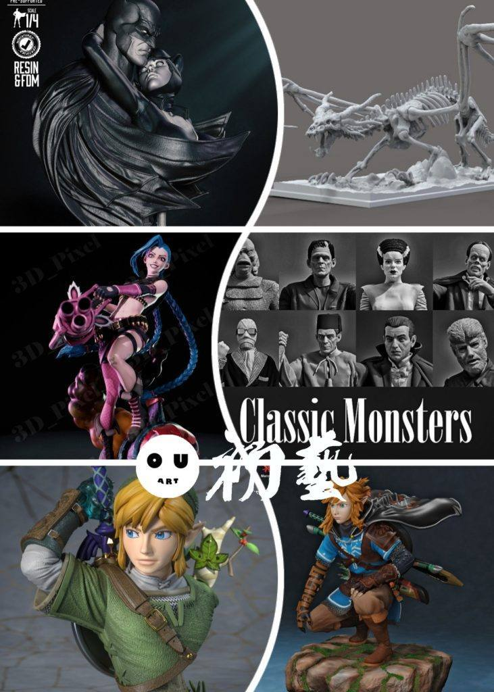
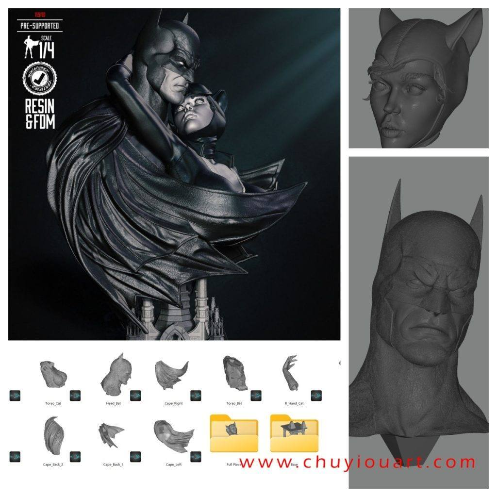
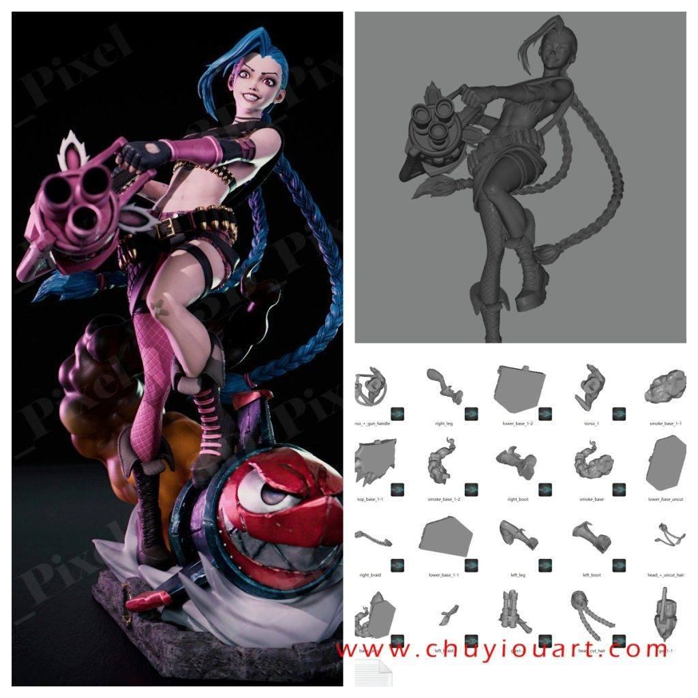
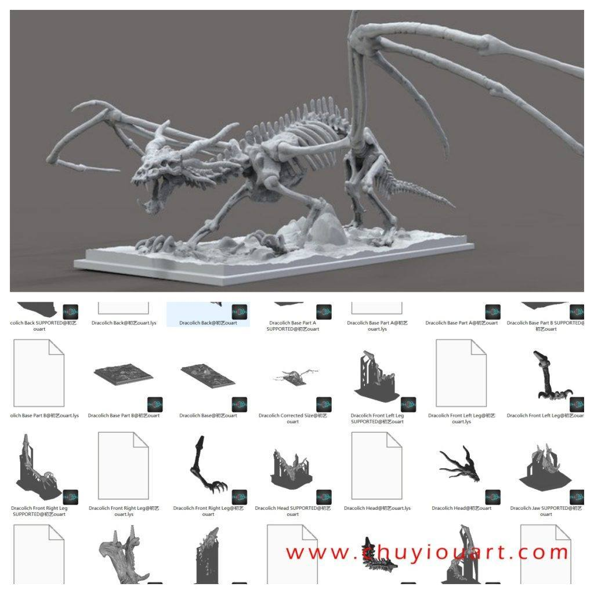
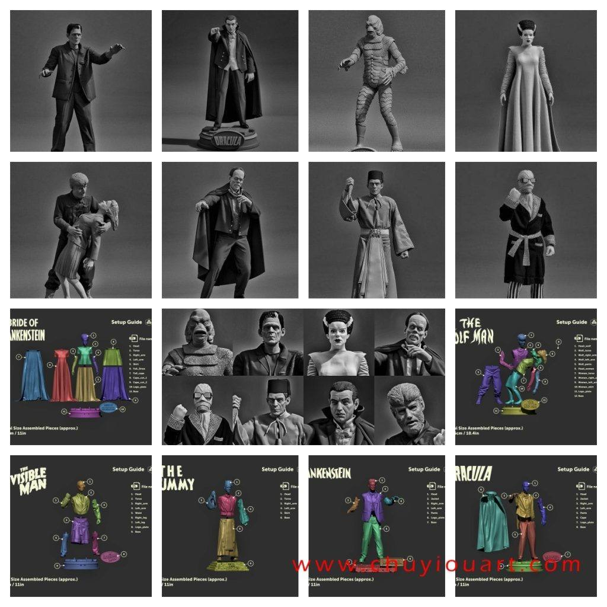
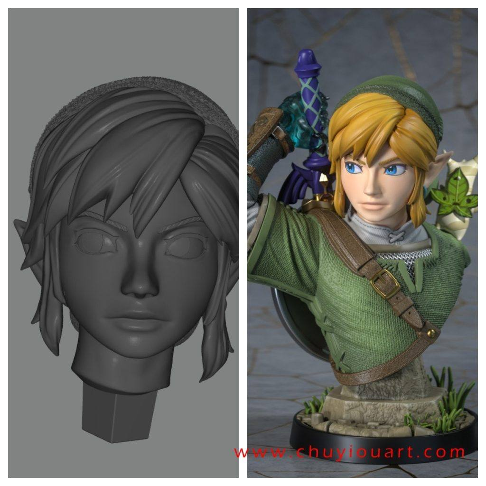
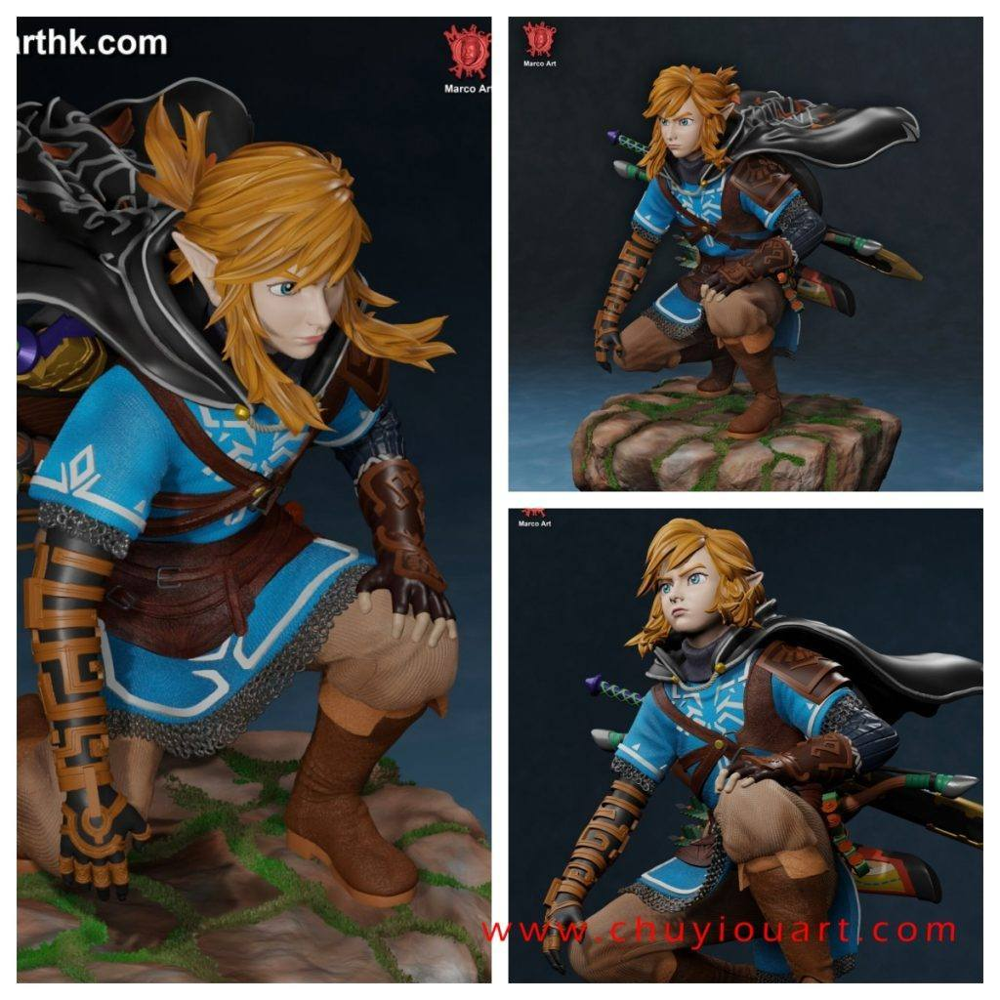

12月01日STl图纸文件分享
提取码
zk75
1.蝙蝠侠和猫女，胸像雕像，动态很好，精度高。

2.金克斯，分件较多，精度动态都还不错。

3.龙骨架，可研究结构使用，很多场景中也能用得上。

4.经典怪物组合，8组经典怪物，分件比较细致，精度还不错。

5.林克两组，胸像和蹲姿，目前林克的模型以及不少了，可以安排一个专贴。


链接: https://pan.baidu.com/s/18K4Eg-9xbnMTmX2tlm6T1g 提取码: zk75
以上内容仅供个人使用（非商用）
ONLY for PERSONAL (NON-COMMERCIAL) use.
加群获得更多免费模型！

备注“模型资源”入群